5/2/2018
ONE TWO UNIFLU
I don't even know what to say. You kiddo joes have no idea. But whats a blog without blogees? Is that what you call stuff on a blog? Where in dang heck did the word blog even come from? These are the important questions in life. Lets just go for it and see what happens.
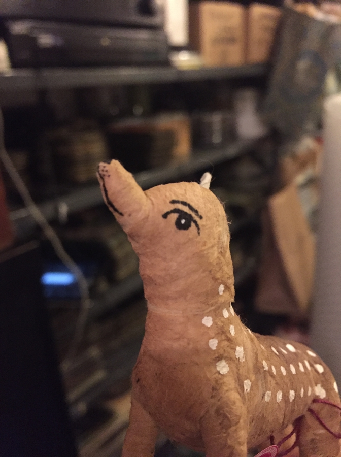I tend to write notes as I go about things and thoughts. Over the years quite a few build up, most are rubbish, some are ok. I had to sell my laptop a few weeks ago so I wouldn't get kicked out of my apartment, that sure didn't help getting these blog updates out! Im not even sure how Ill publish this one yet, new program :P Anyway, as I was clearing out the hard drive, a document opened itself, It must have been stuck in RAM somewhere, it had never been saved. From the last edit date, it had been sitting in RAM for over a year, here's what it said:
"I hate that sometimes I think of you". Those words were carved in the back panel of a public toilet in downtown Tansanda. Its the dawn of the Pander Sky, when all 18 of the moons line up into a coaxial vortex with the sun and the temperature drops due to restricted light. A nearby tree had fallen over and Sondro pods were clicking out of the sewers to eat its bark. Atra was making her way from the nearest sub station to a Dorrmer store. The roads had emptied, and so she sat in the middle of the street, her eyes fixed on the ever spiraling sky. It spit back at her covering the ground with a gleaming clear mud.
The distant glint of the Mono Dome caught her attention. It slowly rotated on the ghost hill past the city bounds. Normally it was dull and grey, but as the sun set and the sky spit stuck, looked like a steel turbine engin.
I think I wrote it during exams when I was supposed to be studying. I imagine it was a fantasy world then, but it sure sounds like New York now :P
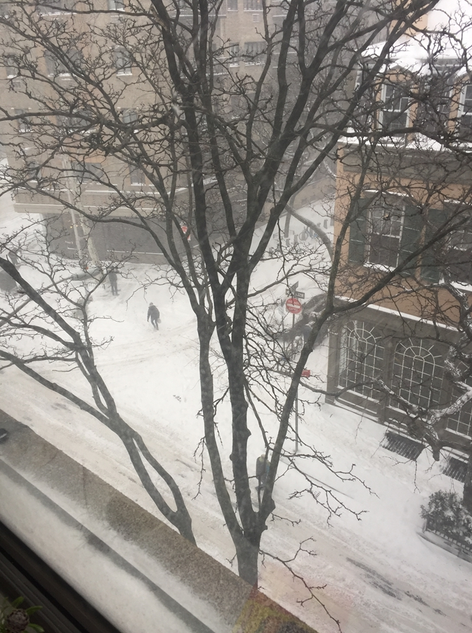That laptop was filled with notes and clippings, years and years of junk. Things that seemed clever or important at the time and now are mostly just a bit off. The disoriented dream notes are my favorite, particularly the one claiming you could change the universe by complementing people. There's also a note I wrote on my first trip away from home on my own, it reads "Ireland is a pretty great place to live, for all its flaws it is and always will be home. Even if you don't always fit in, that's doesn't matter, its home." I cant explain why, but it not home, it never really was. I haven't found home yet.
So I started working at this mad shop a few weeks ago. Its a sort of import high class thrift artisan store thing. I'm grateful to be there, and the people are nice. Its my job to count the animals in the basement, arrange the feet, Windex the cakes, and other shop related things. Every now and then a so called famous person whom I have never heard of comes in and everyone gets very excited and then they leave again. If anything, its amazing subject matter for the inevitable children's book that everyone in my family now produces.
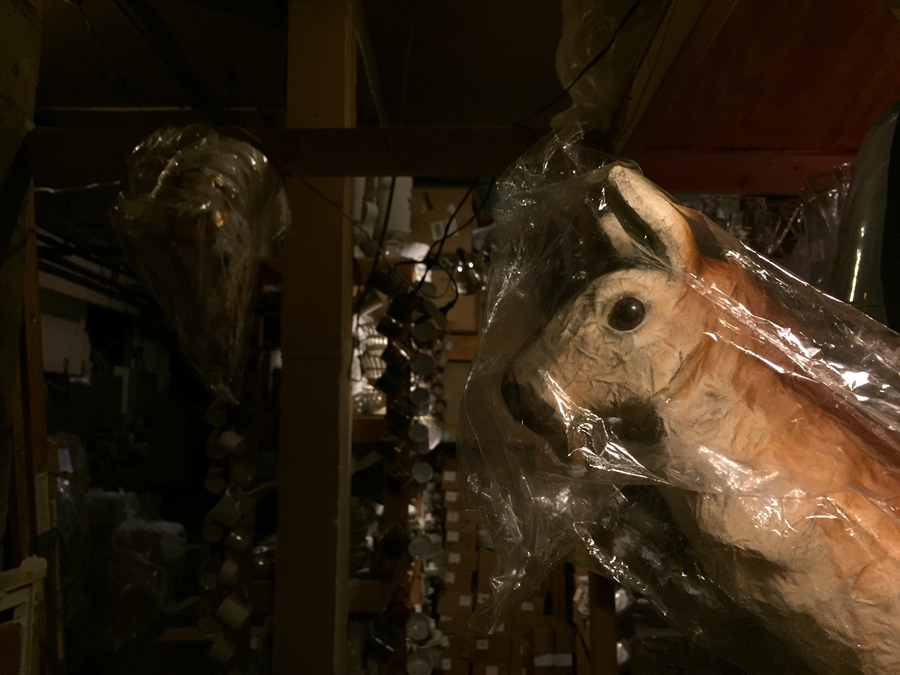 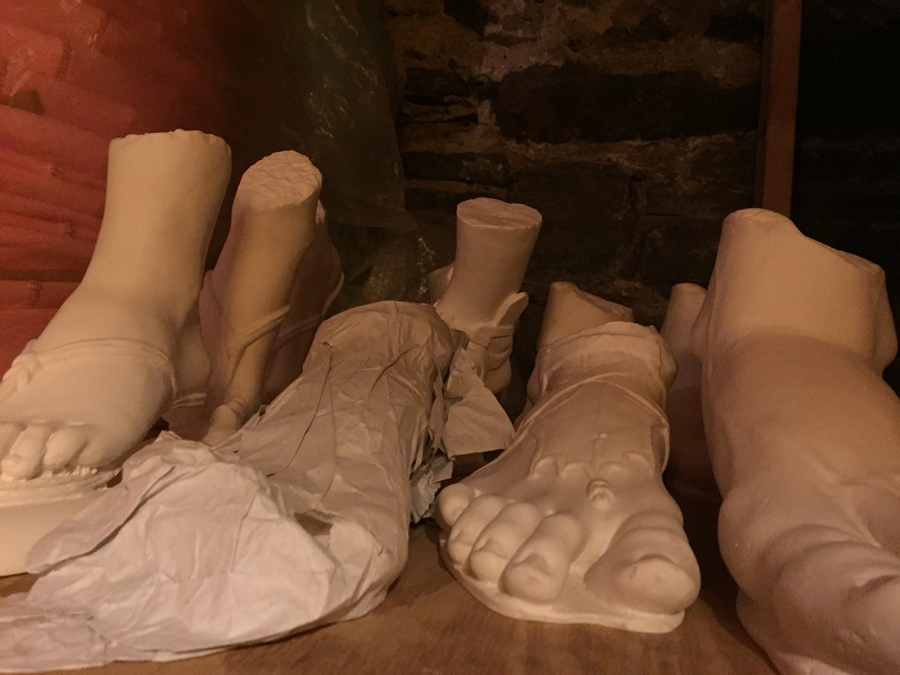I moved to Brooklyn, Soho was depressing. 98% of its population are middle aged women with fur coats and very small dogs pretending to be rich, Chinese students who's only life passions are taking selfies outside clothing stores that sell generic factory tshirts for $500 each, and men who work in fiance and sweat a lot. The other 2% of the people are homeless.
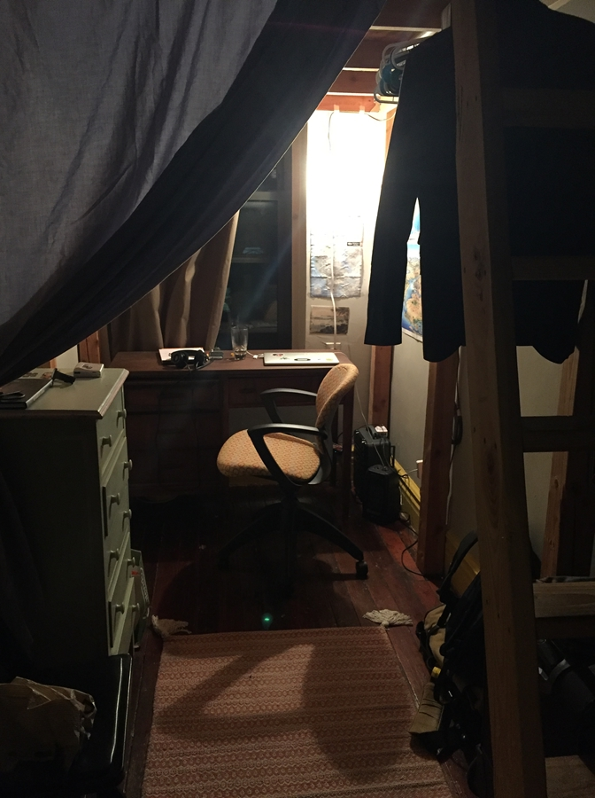 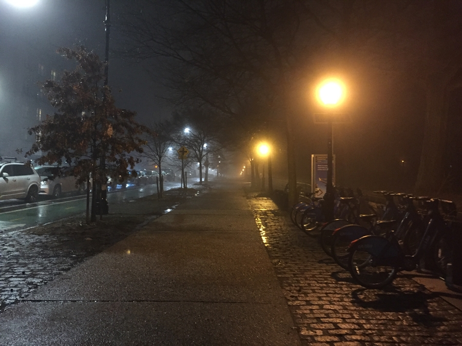I have issues with Brooklyn too, but not the street im on. Its Broadway (The Brooklyn version), it has a big overhead railway down the whole street. Its dark, grungy and working class and reminds me of that one Sesame Street tape we had when I was little. Its also only got 2 years left. Brooklyn is changing very fast, just one street over from me new buildings are going up and dollar stores are shutting down. This week 3 empty shops around me have started going under renovation. Walk a little farther and the population gets younger and whiter, and the shops get more hipsterish. I cant go to the hipster places, not sure why, I feel like crawling out of my skin there, its like they excrete social anxiety. There's a crappy diner under the apartment though run by a woman who is identical in every way to the land lord from Kimmy Schmidt, they haven't quite invaded this far yet. The saddest thing is, while im here appreciating its grunge, I know Im part of its end.
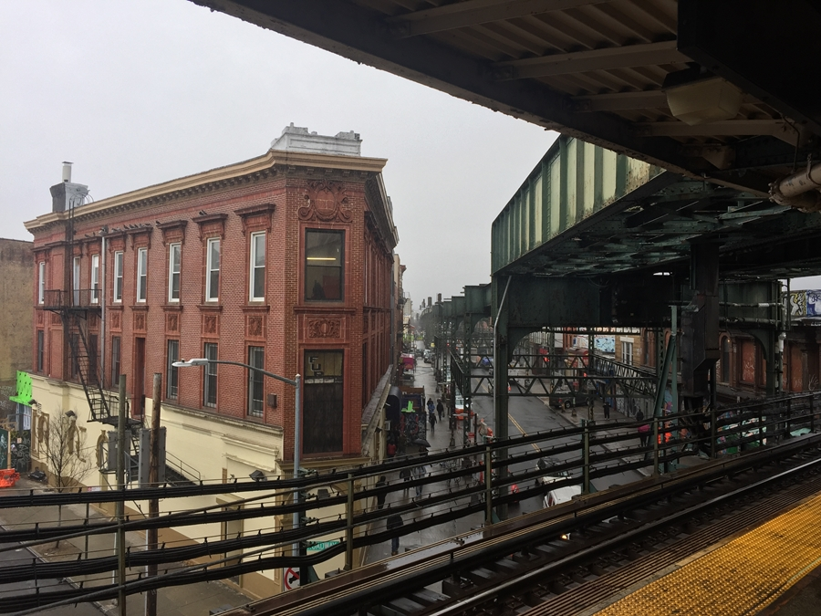 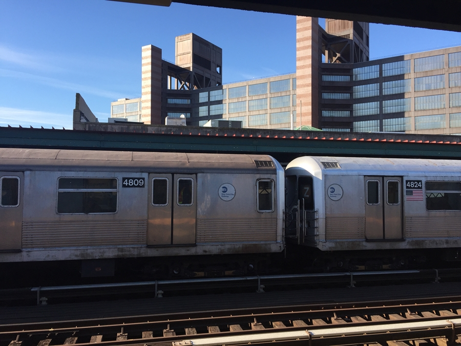For now though, for this moment, its here and I enjoy it. My room is a little bigger and I have a "dormer bed" AKA a bunk bed for adults. My window faces directly onto the over head train line so I can watch people going by on the subway as I fall asleep. Its so cool! Im sure there's a movie just like it. I also have 8 other roommates now, so Im not as isolated as before. We had like a house party on Friday for someones birthday, it went on till like 4am, a few people drank some nasty vodka and regretted it, so did the people who had to clean up. Almost everyone there fitted their personality so well, one girl studying physiology in NYU even interrogated me about my opinion on whether kids should have to swear the pledge of allegiance in schools. That completed my view of what a student house party should be like. As for the question, I support students swearing the pledge of allegiance, it gives them something to believe in.
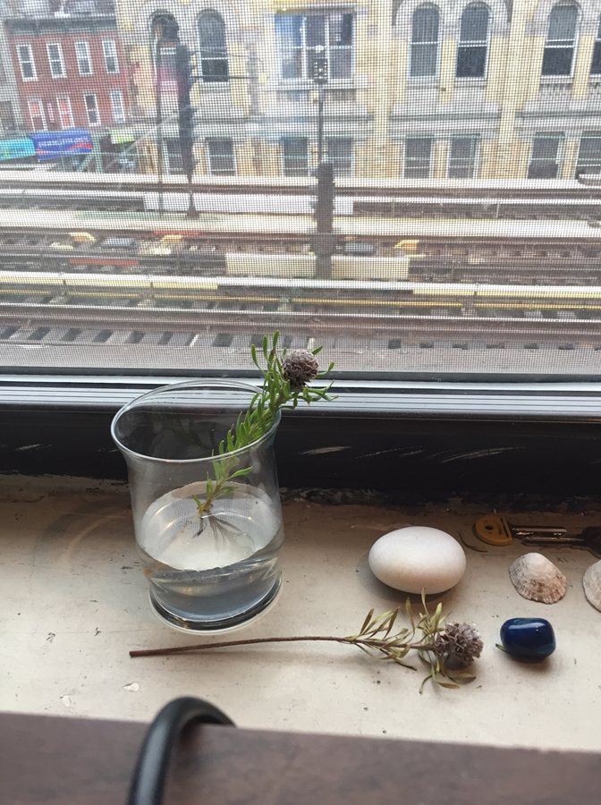This evening we watched the Super Bowl and got pizza. Its pretty good to be honest, its kinda like watching medieval warfare, much more entertaining than that pansy running around after a ball called soccer. Anyway the eagles won, which was good because that's the team we were rooting for.
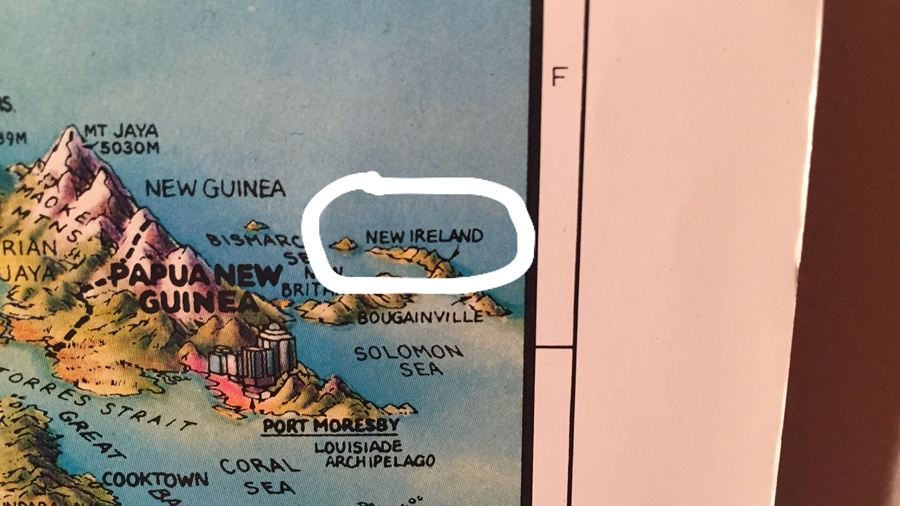 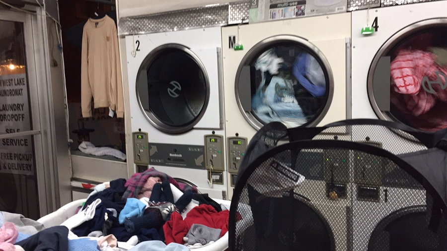What else is there, been putting a bit work work into a game called MowTown(Title is WIP) where you have to mow lawns for king pig and find all the gronks hiding in the grass so they can do the serious dance in gronk town. Im not sure if it will be horribly boring or really fun, we'll find out. Have someone whos interested in doing a soundtrack for it too. Also met some guys on craigslist and we're working on some software projects that I cant talk about.
There's an amazing tech repair store in lower Chinatown. It specializes in 80s and pre 80s audio tech and cameras. I was finally able to drop off my Walkman for repair. Also picked up a proper boombox, I got it for my room but it now mostly lives in the kitchen and entertains/pisses off my other roommates. Today I put on medieval chanting and ate noodles in a cloak. I actually would hate to live with me, which is a worrying realization because I do.
Anyway, the owner of the 80s tech store is from Pakistan and he gave me an hour long talk on a number of topics, including but not limited to: How important it is to save money and invest in property, never take out loans! How bad Trump is and how racist everywhere outside of New York is. And how people expect to get paid for doing nothing. We both agreed that the English had done a really crappy job at running their empire and if they had just treated all its citizens fairly it would have survived. They also really screwed up with the whole partitioning of India and Ireland thing. Actually come to think of it, everyone I have met here so far has issues with the British. And Iv not meant any British people except for one girl way back at the hostel who seemed to be really sick of being here.
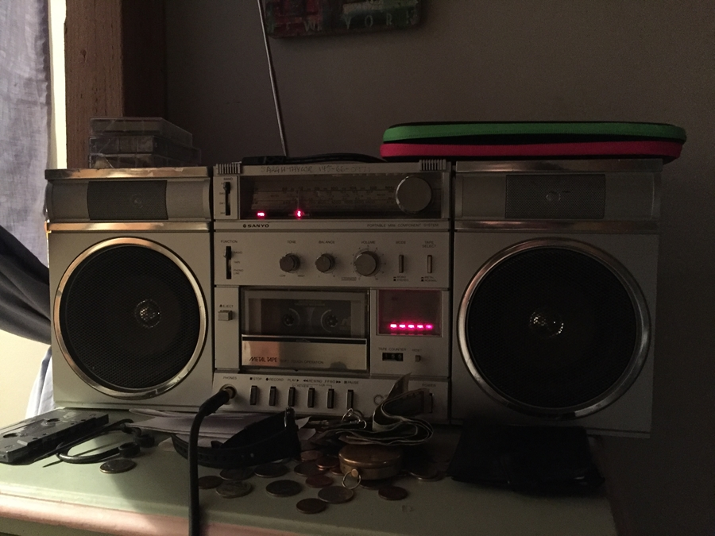One thing I miss is the 24 hour grocery store that was near in Soho, the staff used to pretend to be birds and make bird sounds at each other across the ails while they stocked the shelves at 2am on a Friday night. The grocery store out here seems to mostly cater to Latin American cooking styles and closes at 10pm, their choice of butter is pitiful.
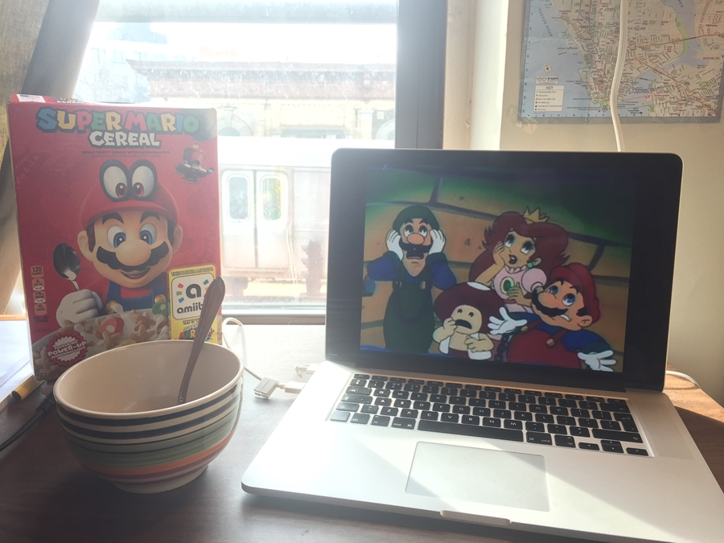Is there any more to say? There's a mouse in the apartment, the attendant is a bit... Well.. He told us how he set up 5 different type of rat trap, and filmed them all in action, and then watched slow motion replays of how effective they were. He then concluded that the most effective by far was the one that electrocuted the rats to death "Like an electric chair", he then went on to act out to us exactly how the rats looked as they were being electrocuted, and extolled the value of the electric shock rat trap further.
Ill try and post a little more, now that this big one is out of the way, Im sure I missed stuff. I know I didn't talk about Christmas, but there was not much to say. I tried to go to times square for new years, its was -12c, and really crowded. I only made it to the street across from it. Other stuff happened, lots of stuff that sucked, crappy airbnb guests, endless soul sucking job applications getting turned down, loosing friends, gaining friends. The usual! I'm done with this post. Melon Out.